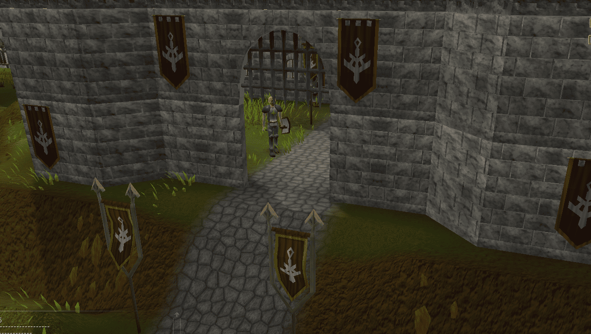

Ardougne

Copy indexes
val cacheFrom = CacheLibrary.create("data/cache_from", true, progressListener)
val cacheTo = CacheLibrary.create("data/cache_to", true, progressListener)
val index = cacheTo.index(7)
cacheFrom.index(7).cache()
index.clear()
index.add(*cacheFrom.index(7).archives())
index.update()
cacheTo.rebuild(File("data/cache_rebuild"))
Copy component
val cacheFrom = CacheLibrary.create("data/cache_from", true, progressListener)
val cacheTo = CacheLibrary.create("data/cache_to", true, progressListener)
val archiveToCopy = sourceCache.index(3).archive(278)
if (archiveToCopy == null) {
println("Archive (interface) not found in source cache.")
return
}
val newId = 834
val replace = true
destinationCache.index(3).add(archiveToCopy, newId, null, replace)
destinationCache.index(3).update()
println("Interface copied successfully with ID: $newId")
Copy Map
val cacheFrom = CacheLibrary.create("data/cache_from", true, progressListener)
val cacheTo = CacheLibrary.create("data/cache_to", true, progressListener)
val regionId = 5961
val x = (regionId shr 8) and 0xFF
val y = regionId and 0xFF
val xtea = intArrayOf(-1079239003, -1252985597, -1721093014, 2094235596)
val regionData = cacheFrom.index(5).archive("l${x}_${y}", xtea)
if (regionData != null) {
val fileData = regionData.files()
val archiveTo = cacheTo.index(5).add("l${x}_${y}", xtea)
archiveTo.add(*fileData)
cacheTo.index(5).update()
println("Region l${x}_${y} copied.")
} else {
println("Region l${x}_${y} not exist or wrong xtea.")
}